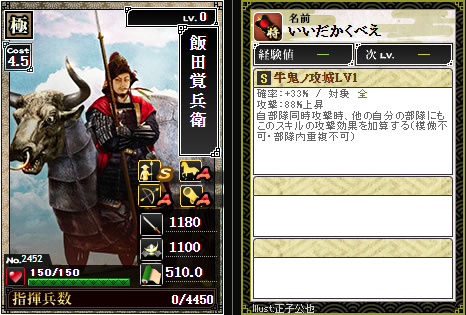

飯田覚兵衛 No.2452

飯田覚兵衛いいだかくべえ
ステータス
| 攻撃 | 防御 | 兵法 |
|---|---|---|
| 1180 (+58) | 1100 (+48) | 510 (+2.5) |
統率
| 槍: S | 弓: A | 馬: A | 器: A |
スキル
牛鬼ノ攻城
S/LV10 確率 60% 攻撃124%上昇/対象:全
模倣不可
①攻撃124%上昇する
②自部隊同時攻撃時他の自分の部隊にもこのスキルの攻撃効果を加算する(部隊内重複不可)
模倣不可
①攻撃124%上昇する
②自部隊同時攻撃時他の自分の部隊にもこのスキルの攻撃効果を加算する(部隊内重複不可)
鍛錬レベル別性能
| レベル | 必要ポイント | 効果 |
|---|---|---|
| LV10 | - | 全 確率 60% / 攻撃 124%上昇(自部隊同時攻撃時、他の自分の部隊にも攻撃効果を加算・模倣不可・部隊内重複不可) |
合成素材にした場合の候補スキル
| 候補 | 初期スキル | 移植後合成候補 |
|---|---|---|
| A | 銃槍 轟攻陣 A 対象:槍鉄 確率24% 攻撃76%上昇+破壊30%上昇 | 銃槍 轟攻陣 A 対象:槍鉄 確率24% 攻撃76%上昇+破壊30%上昇 |
| B | 無双英傑 SS 対象:全 確率50% 攻撃99.9%上昇+防御99.9%上昇(部隊消費コストを0.5低下・特殊効果は模倣不可) | 覇王絶世 SS 対象:全 確率24% 攻撃部隊ランクボーナスx15%上昇(部隊ランクボーナスで効果が変化) |
| C | 天焉相克 SS 対象:槍・弓・馬 確率70% 全攻 30%上昇(部隊の総コストで効果が変化) | |
| S1 | 荒破閃神 SS 対象:全 確率45% 攻撃110%上昇(6部隊以下の攻撃で効果2倍) | |
| S2 | 破軍星 皇 SS 対象:全 確率69% 攻撃140%上昇(自部隊同時攻撃時コスト最大0.5除外・模倣不可) | 破軍星 皇 SS 対象:全 確率69% 攻撃140%上昇(自部隊同時攻撃時コスト最大0.5除外・模倣不可) |
Illust. 正子公也